\[
\begin{gather*}
De: Ax = b \hspace{0.2cm} \Longrightarrow MAx = Mb, \hspace{0.2cm} cond(MA) < cond(A)
\end{gather*}
\]
\[ \begin{gather*} A = M - N, \hspace{0.2cm} donde \hspace{0.2cm} M \end{gather*} \] es una matriz no singular, entonces
\[
\begin{gather*}
(M - N)x = b \\
Mx = Nx + b \\
x = M^{-1}Nx + M^{-1}b \\
x = M^{-1}(M - A) + M^{-1}b \\
x = (I - M^{-1}A)x + M^{-1}b \\
\end{gather*}
\]
En este caso para que el sistema lineal converja, se debe cumplir que ρ(I - M-1A) < 1. Además
mientras el radio espectral sea más cerca a cero entonces la velocidad de convergencia será mayor.
Los precondicionadores deben cumplir principalmente dos propiedades:
- Facilidad de implementación (bajo coste computacional).
- Debe mejorar la convergencia del sistema lineal.
Algunos Precondicionadores
Asumiendo A = L + D + LT una matriz simétrica definida positiva, para distintas matrices M tenemos:
- M = D: Jacobi
- M = L + D: Gauss-Seidel
- M = (1/ ω)(D + ωL): SOR
- M = HHT, donde H es cercana a L: Factorización incompleta de Cholesky
Otros Precondicionadores
- Factorización incompleta LU
- SSOR
- Gradiente Conjugado
- Inversa Aproximada
- Polinomiales
La importancia de los métodos iterativos en álgebra lineal se deriva de un simple hecho: los métodos directos requieren de O(n3). Es así que para matrices con n > 10 3 se va volviendo intratable el no pensar resolverlo con un algoritmo iterativo.
Aunque los métodos iterativos requieren menos almacenamiento no tienen la fiabilidad de los métodos directos en cuanto a precisiones de solución se requiere.
Ecuación Diferencial Parcial de segundo orden con coeficientes constantes:
\[ \begin{gather*}
au_{xx} + bu_{xy} + cu_{yy} + du_{x} + eu_{y} + fu = F(x, y)
\end{gather*}
\]
Ecuación Diferencial Parcial de tipo Elíptica
\[
\begin{gather*}
b^{2} - 4ac < 0
\end{gather*}
\]
Dan lugar a matrices de grandes dimensiones sparse
Técnicas de Discretización - Diferencias Finitas - Aplicaciones
Ejemplo: 1D - problem
\[
\begin{gather*}
-u^{''}(x) = f(x) \\
u(0) = u(1) = 0
\end{gather*}
\]
Ecuación en diferencias:
\[
\begin{gather*}
-u_{i-1} + 2u_{i} - u_{i+1} = h^{2}f_{i}
\end{gather*}
\]
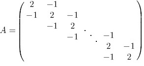
Ejemplo: Esquemas de Viento
\[
\begin{gather*}
-au^{''} + bu^{'} = 0 , \hspace{0.2cm} 0 < x < L = 1 \\
u(0) = 0, u(L) = 1
\end{gather*}
\]
Ecuación en diferencias:
\[
\begin{gather*}
-(1-c)u_{i+1} + 2u_{i} - (1+c)u_{i-1} = 0
\end{gather*}
\]
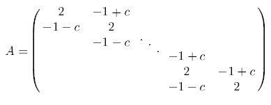
Ejemplo: Ecuación de Laplace
\[
\begin{gather*}
u_{xx} + u_{yy} = 0, \\
u_{x}(0,y) = 0, u_{y}(a,y) = 0, \hspace{0.2cm} 0 < y < b \\
u(x,0) = 0, u(x,b) = f(x) , \hspace{0.2cm} 0 < x < a
\end{gather*}
\]
\[
\begin{gather*}
u_{i+1,j} + u_{i-1,j} + u_{i,j+1} + u_{i,j-1} - 4u_{i,j} = 0
\end{gather*}
\]
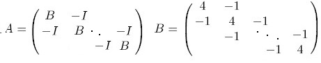
GENERACIÓN DE MALLAS
- La idea es mallar un espacio dado algunos limites dado un dominio dado.
- Existen técnicas muy generales, capaces de generar mallas en geometrı́as complejas.
- También existen técnicas para generar mallas a una gran velocidad, pero son incapaces de mallar geometrı́as de cierta complejidad
- Dependiendo la geometrı́a del dominio, el coste computacional y la capacidad de control sobre la malla será lo que nos haga decidir por los métodos.
TIPOS DE MALLAS
- Métodos de generación de malla estructurada:
- Algebraicos.
- Basados en EDPs.
- Superposición-deformación de retı́cula.
- Crecimiento estructurado.
- Métodos de generación de malla no estructurada
- Inserción de nodos y posterior conexión: Delaunay.
- Generación simultánea de nodos y conectividad: Frente de avance.
- Métodos Multibloque.
TIPOS DE MALLAS
| Mallas Estructuradas |
Mallas No Estructuradas |
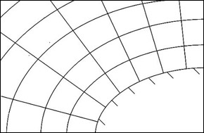
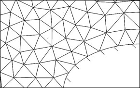
Nuestro Proposito: Mallas Estructuradas
MALLAS ESTRUCTURADAS
-
Métodos Algebraicos Basados en Interpolación.
Se relacionan los puntos de malla del dominio fı́sico con el dominio computacional. Se basa en el uso de técnicas de interpolación y relaciones algebraicas exactas, lo cual permite la obtención rápida de la malla.
-
Métodos Basados en PDE's
Se resuelve un sistema de PDE’s para localizar los puntos en el interior del dominio fı́sico.
RELACIÓN DE TRANSFORMACIÓN
| Plano Fı́sico. |
- |
Plano Computacional. |
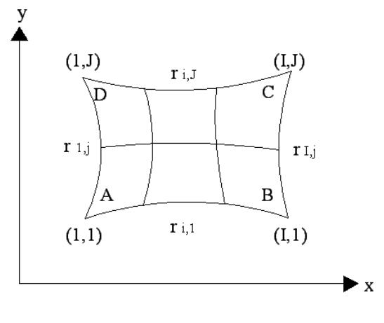
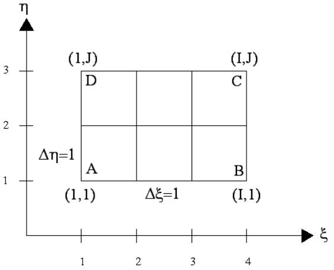
RELACIÓN DE TRANSFORMACIÓN
\[\begin{gather*}
\xi=\xi(x,y),\eta=\eta(x,y)\\
\left[\begin{array}{cc}
\frac{\partial u}{\partial x} & \frac{\partial u}{\partial y}\\
\frac{\partial v}{\partial x} & \frac{\partial v}{\partial y}
\end{array}\right]=\left[\begin{array}{cc}
\frac{\partial u}{\partial\xi} & \frac{\partial u}{\partial\eta}\\
\frac{\partial v}{\partial\xi} & \frac{\partial v}{\partial\eta}
\end{array}\right]\left[\begin{array}{cc}
\frac{\partial\xi}{\partial x} & \frac{\partial\xi}{\partial y}\\
\frac{\partial\eta}{\partial x} & \frac{\partial\eta}{\partial y}
\end{array}\right]\\
\\
\end{gather*} \]
SOBRE EL PROBLEMA, MÉTODOS USADOS Y RESULTADOS 1
Métodos usados
El procedimiento que seguimos consiste de los siguientes 3 pasos:
- Uso del generador algebraico de interpolación transfinita
- Discretización de las ecuaciones del generador elíptico
- Refinamiento iterativo de la malla
Método algebraico de interpolación transfinita
Como paso inicial usamos este método de generación algebraico, el cuál
calcula los puntos dentro del grid/mesh como una interpolación entre las
fronteras de la geometría.
Método algebraico de interpolación transfinita
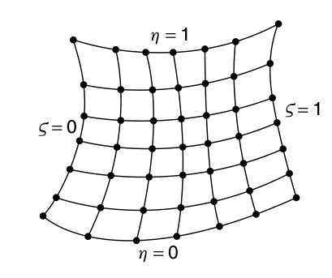
Método algebraico de interpolación transfinita
\[\begin{gather*}
x( \xi, \eta ) = ( 1 - \xi ) x_{l} + \xi x_{r} + ( 1 - \eta ) x_{b} + \eta x_{t} - ... \\
( 1 - \eta ) ( 1 - \xi ) x_{b}(0) - ( 1 - \xi ) \eta x_{t}(0) - ... \\
( 1 - \eta ) \xi x_{b}(1) - \eta \xi x_{t}(1)
\\
y( \xi, \eta ) = ( 1 - \xi ) y_{l} + \xi y_{r} + ( 1 - \eta ) y_{b} + \eta y_{t} - ... \\
( 1 - \eta ) ( 1 - \xi ) y_{b}(0) - ( 1 - \xi ) \eta y_{t}(0) - ... \\
( 1 - \eta ) \xi y_{b}(1) - \eta \xi y_{t}(1)
\end{gather*} \]
Método algebraico de interpolación transfinita
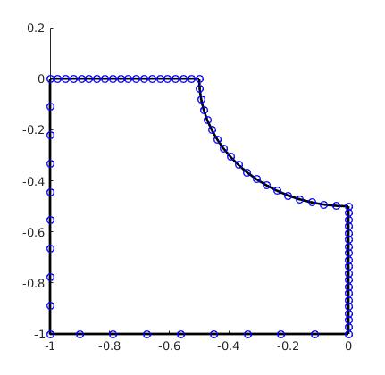
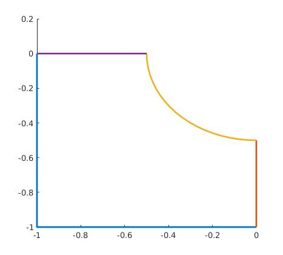
Fronteras de la geometría
Método algebraico de interpolación transfinita
Frontera en forma analítica como segmentos de recta
\[\begin{gather*}
x(q) =
\begin{cases}
x_{i}(q) = x(i) + q \lbrace x(i + 1) - x(i) \rbrace
\end{cases}
\\
y(q) =
\begin{cases}
y_{i}(q) = y(i) + q \lbrace y(i + 1) - y(i) \rbrace
\end{cases}
\\
q = {\xi, \eta}
\end{gather*} \]
Método algebraico de interpolación transfinita
Malla obtenidas con el generador algebraico
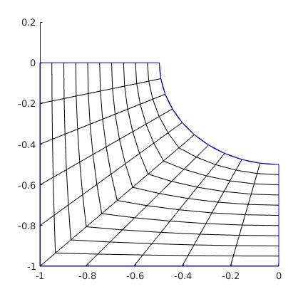
Generador Elíptico
Para refinar la malla generada por el método algebráico usamos este tipo de generador, el cuál se basa en definir un problema de frontera basado en una PDE
elíptica en el espacio x, y.
Generador Elíptico
Problema de frontera
Respecto al espacio físico
\[\begin{gather*}
%
\xi_{xx} + \xi_{yy} = 0 \\
\eta_{xx} + \eta_{yy} = 0 \\
%
\end{gather*} \]
Respecto al espacio de cómputo
\[\begin{gather*}
( x_{\eta \eta}^{2} + y_{\eta \eta}^{2} )x_{\xi \xi}
- 2 ( x_{\xi} x_{\eta} + y_{\xi} y_{\eta} ) x_{\xi \eta}
+ ( x_{\xi \xi}^{2} + y_{\xi \xi}^{2} )x_{\eta \eta}
\\
( x_{\eta \eta}^{2} + y_{\eta \eta}^{2} )y_{\xi \xi}
- 2 ( x_{\xi} x_{\eta} + y_{\xi} y_{\eta} ) y_{\xi \eta}
+ ( x_{\xi \xi}^{2} + y_{\xi \xi}^{2} )y_{\eta \eta}
\end{gather*} \]
Generador Elíptico
Discretización
\[\begin{gather*}
\alpha_{ij} ( x_{i+1,j} - 2 x_{i,j} + x_{i-1,j} ) + \gamma_{ij} ( x_{i, j + 1} - 2x_{i, j} + x_{i,j-1} ) - ... \\
0.5 \beta_{ij} ( x_{i+1,j+1} - x_{i+1,j-1} - x_{i-1,j+1} + x_{i-1,j-1} ) = 0
\end{gather*} \]
\[\begin{gather*}
\alpha_{ij} ( y_{i+1,j} - 2 y_{i,j} + y_{i-1,j} ) + \gamma_{ij} ( y_{i, j + 1} - 2y_{i, j} + y_{i,j-1} ) - ... \\
0.5 \beta_{ij} ( y_{i+1,j+1} - y_{i+1,j-1} - y_{i-1,j+1} + y_{i-1,j-1} ) = 0
\end{gather*} \]
Generador Elíptico
Discretización
\[\begin{gather*}
%
\xi = \frac{i}{N_{\xi}},\eta = \frac{j}{N_{\eta}}
%
\end{gather*} \]
\[\begin{gather*}
%
\alpha_{ij} = 0.25 ( ( x_{i,j+1} - x_{i,j-1} )^{2} + (y_{i,j+1} - y_{i,j-1})^{2} )
\end{gather*} \]
\[\begin{gather*}
\beta_{ij} = 0.25 ( ( x_{i,j+1} - x_{i,j-1} ) ( x_{i+1,j} - x_{i-1,j} ) + ... \\ ( y_{i,j+1} - y_{i,j-1} ) ( y_{i+1,j} - y_{i-1,j} ) )
\end{gather*} \]
\[\begin{gather*}
\gamma_{ij} = 0.25 ( ( x_{i+1,j} - x_{i-1,j} )^{2} + (y_{i+1,j} - y_{i-1,j})^{2} )
%
\end{gather*} \]
Refinamiento iterativo
De las ecuaciones discretizadas podemos formar un sistema lineal. Para esto hacemos uso de la iteración de picard para poder obtener las ecuaciones que describan en forma iterativa un sistema lineal.
Refinamiento iterativo
Iteración de Picard
\begin{gather*}
\alpha_{ij}^{k} ( x_{i+1,j}^{k+1} - 2 x_{i,j}^{k+1} + x_{i-1,j}^{k+1} ) + \gamma_{ij}^{k} ( x_{i, j + 1}^{k+1} - 2 x_{i, j}^{k+1} + x_{i,j-1}^{k+1} )
\end{gather*}
\begin{gather*}
-0.5 \beta_{ij}^{k} ( x_{i+1,j+1}^{k+1} - x_{i+1,j-1}^{k+1} - x_{i-1,j+1}^{k+1} + x_{i-1,j-1}^{k+1} ) = 0
\end{gather*}
Refinamiento iterativo
Stencil equivalente para generar la matriz del sistema lineal
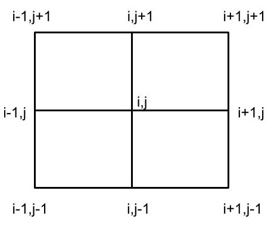
Refinamiento iterativo
Mallas resultantes luego de 10 iteraciones ( size 10 y 30 respectivamente )
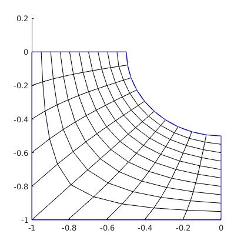
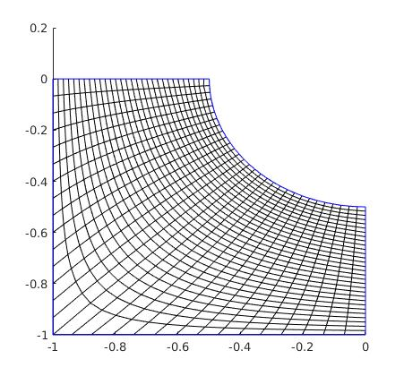
SOBRE EL PRECONDICIONADOR Y EL MÉTODO USADO PARA RESOLVER EL SISTEM, RESULTADOS 2